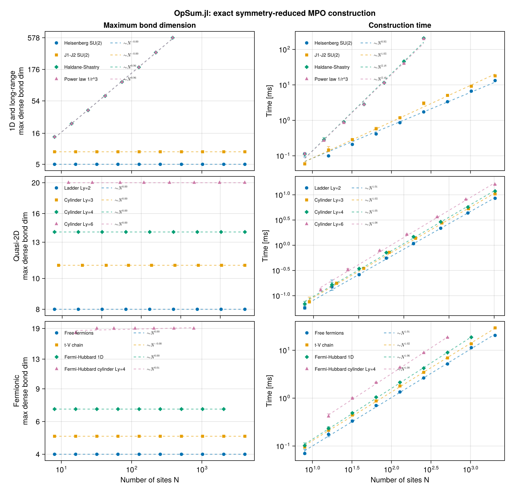
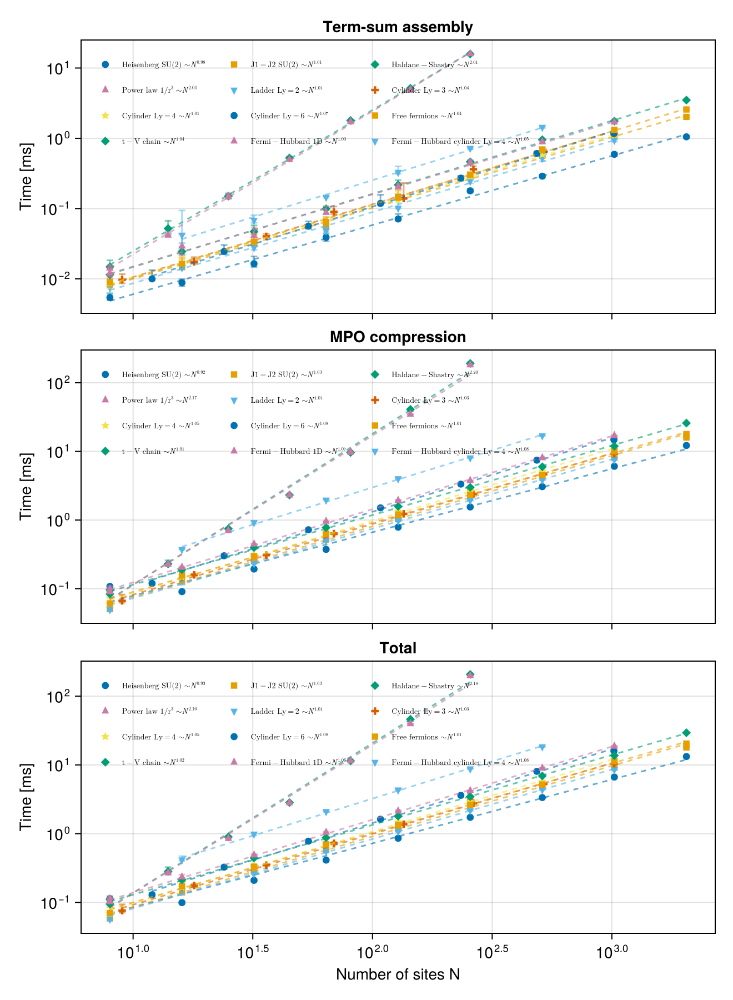

Spin chains
This page builds the three workhorse one-dimensional spin models and shows how the symmetry you impose and the range of the interaction each leave a distinct fingerprint on the MPO bond dimension:
| model | symmetry | reduced $D$ | dense-equivalent $D$ |
|---|---|---|---|
| Heisenberg | SU(2) | 3 | 5 |
| XXZ | U(1) | 5 | 5 |
| $J_1$–$J_2$ | SU(2) | 4 | 8 |
The reduced bond dimension counts symmetry-resolved indices — what a DMRG sweep actually pays for. The dense-equivalent one is what a symmetry-agnostic MPO would need for the same operator.
using OpSum: OpSum
include(joinpath(pkgdir(OpSum), "examples", "common.jl"))
using OpSum: aritySU(2) Heisenberg
\[H = J \sum_i \vec{S}_i \cdot \vec{S}_{i+1}\]
With SU(2) symmetry there is a single neutral two-site spin operator: the rotationally invariant scalar product $\vec S_i \!\cdot\! \vec S_j$. The builder spin_ops calls it S_exchange, and the Hamiltonian is a one-liner. (The rank-1 vector operator $\vec S$ itself is a charged element of the basis, spin_basis(SU2Irrep); the builder pairs it up for you.)
As throughout, the terms are handed to opsum in one pass: it is the linear accumulator, where folding + would copy on every step.
B = spin_basis(SU2Irrep)
ops = spin_ops(SU2Irrep)
su2chain(N) = FiniteChain(B, N)
heisenberg(N; J = 1.0) = opsum(su2chain(N), J * ops.S_exchange[i, i + 1] for i in 1:(N - 1))
N = 8
H_heis = heisenberg(N)
res_heis = build("Heisenberg SU(2)", H_heis)(Ws = SparseArrays.SparseMatrixCSC{OpSum.SiteOperator{TensorKitSectors.SU2Irrep}, Int64}[sparse([1, 1], [1, 2], OpSum.SiteOperator{TensorKitSectors.SU2Irrep}[SiteOperator{TensorKitSectors.SU2Irrep}(ITO(Irrep[SU₂](0), n=1)), SiteOperator{TensorKitSectors.SU2Irrep}(ITO(Irrep[SU₂](1), n=1))], 1, 2), sparse([1, 1, 2], [1, 2, 3], OpSum.SiteOperator{TensorKitSectors.SU2Irrep}[SiteOperator{TensorKitSectors.SU2Irrep}(ITO(Irrep[SU₂](0), n=1)), SiteOperator{TensorKitSectors.SU2Irrep}(ITO(Irrep[SU₂](1), n=1)), SiteOperator{TensorKitSectors.SU2Irrep}(-2.598076211353318 + 0.0im*ITO(Irrep[SU₂](1), n=1))], 2, 3), sparse([1, 1, 2, 3], [1, 2, 3, 3], OpSum.SiteOperator{TensorKitSectors.SU2Irrep}[SiteOperator{TensorKitSectors.SU2Irrep}(ITO(Irrep[SU₂](0), n=1)), SiteOperator{TensorKitSectors.SU2Irrep}(ITO(Irrep[SU₂](1), n=1)), SiteOperator{TensorKitSectors.SU2Irrep}(-2.598076211353318 + 0.0im*ITO(Irrep[SU₂](1), n=1)), SiteOperator{TensorKitSectors.SU2Irrep}(ITO(Irrep[SU₂](0), n=1))], 3, 3), sparse([1, 1, 2, 3], [1, 2, 3, 3], OpSum.SiteOperator{TensorKitSectors.SU2Irrep}[SiteOperator{TensorKitSectors.SU2Irrep}(ITO(Irrep[SU₂](0), n=1)), SiteOperator{TensorKitSectors.SU2Irrep}(ITO(Irrep[SU₂](1), n=1)), SiteOperator{TensorKitSectors.SU2Irrep}(-2.598076211353318 + 0.0im*ITO(Irrep[SU₂](1), n=1)), SiteOperator{TensorKitSectors.SU2Irrep}(ITO(Irrep[SU₂](0), n=1))], 3, 3), sparse([1, 1, 2, 3], [1, 2, 3, 3], OpSum.SiteOperator{TensorKitSectors.SU2Irrep}[SiteOperator{TensorKitSectors.SU2Irrep}(ITO(Irrep[SU₂](0), n=1)), SiteOperator{TensorKitSectors.SU2Irrep}(ITO(Irrep[SU₂](1), n=1)), SiteOperator{TensorKitSectors.SU2Irrep}(-2.598076211353318 + 0.0im*ITO(Irrep[SU₂](1), n=1)), SiteOperator{TensorKitSectors.SU2Irrep}(ITO(Irrep[SU₂](0), n=1))], 3, 3), sparse([1, 1, 2, 3], [1, 2, 3, 3], OpSum.SiteOperator{TensorKitSectors.SU2Irrep}[SiteOperator{TensorKitSectors.SU2Irrep}(ITO(Irrep[SU₂](0), n=1)), SiteOperator{TensorKitSectors.SU2Irrep}(ITO(Irrep[SU₂](1), n=1)), SiteOperator{TensorKitSectors.SU2Irrep}(-2.598076211353318 + 0.0im*ITO(Irrep[SU₂](1), n=1)), SiteOperator{TensorKitSectors.SU2Irrep}(ITO(Irrep[SU₂](0), n=1))], 3, 3), sparse([1, 2, 3], [1, 2, 2], OpSum.SiteOperator{TensorKitSectors.SU2Irrep}[SiteOperator{TensorKitSectors.SU2Irrep}(ITO(Irrep[SU₂](1), n=1)), SiteOperator{TensorKitSectors.SU2Irrep}(-2.598076211353318 + 0.0im*ITO(Irrep[SU₂](1), n=1)), SiteOperator{TensorKitSectors.SU2Irrep}(ITO(Irrep[SU₂](0), n=1))], 3, 2), sparse([1, 2], [1, 1], OpSum.SiteOperator{TensorKitSectors.SU2Irrep}[SiteOperator{TensorKitSectors.SU2Irrep}(-2.598076211353318 + 0.0im*ITO(Irrep[SU₂](1), n=1)), SiteOperator{TensorKitSectors.SU2Irrep}(ITO(Irrep[SU₂](0), n=1))], 2, 1)], secs = Vector{TensorKitSectors.SU2Irrep}[[0, 1], [0, 1, 0], [0, 1, 0], [0, 1, 0], [0, 1, 0], [0, 1, 0], [1, 0], [0]], D = 3, Ddense = 5, time = 6.6355e-5)The compression is lossless — the reduced MPO reconstructs every original term exactly:
islossless(H_heis)trueand contracting the assembled tensors reproduces the dense operator:
mpo_matches_oracle(heisenberg(4))trueThe bulk bond carries an identity-in channel, an identity-out channel and one open spin-1 multiplet: $1 + 1 + 3 = 5$ in dense terms, but only 3 symmetry-resolved indices.
res_heis.D, res_heis.Ddense(3, 5)U(1) XXZ
\[H = \frac{J}{2} \sum_i \left( S^+_i S^-_{i+1} + S^-_i S^+_{i+1} \right) + J \Delta \sum_i S^z_i S^z_{i+1}\]
Keeping only $U(1)$ leaves three neutral operators: S_z on one site, and the flip-flop products S_plus_S_min and S_min_S_plus on two. The charged $S^\pm$ are inside the basis, so nothing has to be named by an index. The $S^z S^z$ term is the operator product of two placed operators, *, so it reads as it is printed.
Bu = spin_basis(U1Irrep)
ou = spin_ops(U1Irrep)
u1chain(N) = FiniteChain(Bu, N)
function xxz(N; J = 1.0, Δ = 1.0)
return opsum(
u1chain(N),
J / 2 * ou.S_plus_S_min[i, i + 1] +
J / 2 * ou.S_min_S_plus[i, i + 1] +
J * Δ * ou.S_z[i] * ou.S_z[i + 1]
for i in 1:(N - 1)
)
end
H_xxz = xxz(N)
res_xxz = build("XXZ U(1)", H_xxz)
islossless(H_xxz)trueAt $\Delta = 1$ the XXZ chain is the Heisenberg chain. The two builds live on different bases with different symmetry groups, so the sharpest available check is that they have the same spectrum:
spectrum(heisenberg(6)) ≈ spectrum(xxz(6))trueThe same operator, but not the same MPO. The SU(2) build needs 3 symmetry-resolved indices where the U(1) build needs 5, because a single spin-1 multiplet replaces three separate abelian channels ($S^+$, $S^-$, $S^z$). The reduced number is what a DMRG sweep pays for, so this factor of almost two is the practical benefit of imposing the larger symmetry. The dense-equivalent sizes agree (5 and 5), as they must: the open channels carry the same three operators either way.
(su2 = (res_heis.D, res_heis.Ddense), u1 = (res_xxz.D, res_xxz.Ddense))(su2 = (3, 5), u1 = (5, 5))Projecting a whole bond at once
Naming the on-site factors is not the only option. If you already have the two-site bond operator as a TensorMap — from a paper's matrix, from an ED code, from kron — hand it straight to project together with the basis, which expands it in the two-site term basis of that site. Nothing has to factorize into $A_i B_j$: a generic two-site block works, and the coefficients are exact inner products, so the expansion is not a fit.
h_bond = instantiate(
opsum(
FiniteChain(Bu, 2),
(1 / 2) * ou.S_plus_S_min[1, 2] + (1 / 2) * ou.S_min_S_plus[1, 2] + ou.S_z_S_z[1, 2],
)
)
B_xxz = project(h_bond, Bu)OpSum.LocalOperator{TensorKitSectors.U1Irrep}(Terms(1.0 + 0.0im * [sites=[1, 2], ops=OpSum.IrrepTensorOperators.IrrepOperator{TensorKitSectors.U1Irrep}[ITO(Irrep[U₁](0), n=2), ITO(Irrep[U₁](0), n=2)], total=Irrep[U₁](0)] + 0.5 + 0.0im * [sites=[1, 2], ops=OpSum.IrrepTensorOperators.IrrepOperator{TensorKitSectors.U1Irrep}[ITO(Irrep[U₁](1), n=1), ITO(Irrep[U₁](-1), n=1)], total=Irrep[U₁](0)] + 0.5 + 0.0im * [sites=[1, 2], ops=OpSum.IrrepTensorOperators.IrrepOperator{TensorKitSectors.U1Irrep}[ITO(Irrep[U₁](-1), n=1), ITO(Irrep[U₁](1), n=1)], total=Irrep[U₁](0)]), 2)The result is a LocalOperator: the two-site operator before it is told where it acts. B_xxz[i] places it on sites i, i + 1, so the projection — and its faithfulness check, which re-materializes the output and compares it against the input — is paid once rather than once per bond:
H_proj = opsum(u1chain(N), B_xxz[i] for i in 1:(N - 1))OpSum.OperatorSum{TensorKitSectors.U1Irrep, OpSum.FiniteChain{OpSum.Basis{TensorKitSectors.U1Irrep, TensorKit.GradedSpace{TensorKitSectors.U1Irrep, TensorKit.SortedVectorDict{TensorKitSectors.U1Irrep, Int64}}, TensorKit.TensorMap{ComplexF64, TensorKit.GradedSpace{TensorKitSectors.U1Irrep, TensorKit.SortedVectorDict{TensorKitSectors.U1Irrep, Int64}}, 1, 2, Vector{ComplexF64}}}}}(FiniteChain(OpSum.Basis{TensorKitSectors.U1Irrep, TensorKit.GradedSpace{TensorKitSectors.U1Irrep, TensorKit.SortedVectorDict{TensorKitSectors.U1Irrep, Int64}}, TensorKit.TensorMap{ComplexF64, TensorKit.GradedSpace{TensorKitSectors.U1Irrep, TensorKit.SortedVectorDict{TensorKitSectors.U1Irrep, Int64}}, 1, 2, Vector{ComplexF64}}}[Basis(Rep[U₁](1/2 => 1, -1/2 => 1); 4 elements: Irrep[U₁](0) => 2, Irrep[U₁](1) => 1, Irrep[U₁](-1) => 1), Basis(Rep[U₁](1/2 => 1, -1/2 => 1); 4 elements: Irrep[U₁](0) => 2, Irrep[U₁](1) => 1, Irrep[U₁](-1) => 1), Basis(Rep[U₁](1/2 => 1, -1/2 => 1); 4 elements: Irrep[U₁](0) => 2, Irrep[U₁](1) => 1, Irrep[U₁](-1) => 1), Basis(Rep[U₁](1/2 => 1, -1/2 => 1); 4 elements: Irrep[U₁](0) => 2, Irrep[U₁](1) => 1, Irrep[U₁](-1) => 1), Basis(Rep[U₁](1/2 => 1, -1/2 => 1); 4 elements: Irrep[U₁](0) => 2, Irrep[U₁](1) => 1, Irrep[U₁](-1) => 1), Basis(Rep[U₁](1/2 => 1, -1/2 => 1); 4 elements: Irrep[U₁](0) => 2, Irrep[U₁](1) => 1, Irrep[U₁](-1) => 1), Basis(Rep[U₁](1/2 => 1, -1/2 => 1); 4 elements: Irrep[U₁](0) => 2, Irrep[U₁](1) => 1, Irrep[U₁](-1) => 1), Basis(Rep[U₁](1/2 => 1, -1/2 => 1); 4 elements: Irrep[U₁](0) => 2, Irrep[U₁](1) => 1, Irrep[U₁](-1) => 1)]), Terms(1.0 + 0.0im * [sites=[1, 2], ops=OpSum.IrrepTensorOperators.IrrepOperator{TensorKitSectors.U1Irrep}[ITO(Irrep[U₁](0), n=2), ITO(Irrep[U₁](0), n=2)], total=Irrep[U₁](0)] + 0.5 + 0.0im * [sites=[1, 2], ops=OpSum.IrrepTensorOperators.IrrepOperator{TensorKitSectors.U1Irrep}[ITO(Irrep[U₁](1), n=1), ITO(Irrep[U₁](-1), n=1)], total=Irrep[U₁](0)] + 0.5 + 0.0im * [sites=[1, 2], ops=OpSum.IrrepTensorOperators.IrrepOperator{TensorKitSectors.U1Irrep}[ITO(Irrep[U₁](-1), n=1), ITO(Irrep[U₁](1), n=1)], total=Irrep[U₁](0)] + 1.0 + 0.0im * [sites=[2, 3], ops=OpSum.IrrepTensorOperators.IrrepOperator{TensorKitSectors.U1Irrep}[ITO(Irrep[U₁](0), n=2), ITO(Irrep[U₁](0), n=2)], total=Irrep[U₁](0)] + 0.5 + 0.0im * [sites=[2, 3], ops=OpSum.IrrepTensorOperators.IrrepOperator{TensorKitSectors.U1Irrep}[ITO(Irrep[U₁](1), n=1), ITO(Irrep[U₁](-1), n=1)], total=Irrep[U₁](0)] + 0.5 + 0.0im * [sites=[2, 3], ops=OpSum.IrrepTensorOperators.IrrepOperator{TensorKitSectors.U1Irrep}[ITO(Irrep[U₁](-1), n=1), ITO(Irrep[U₁](1), n=1)], total=Irrep[U₁](0)] + 1.0 + 0.0im * [sites=[3, 4], ops=OpSum.IrrepTensorOperators.IrrepOperator{TensorKitSectors.U1Irrep}[ITO(Irrep[U₁](0), n=2), ITO(Irrep[U₁](0), n=2)], total=Irrep[U₁](0)] + 0.5 + 0.0im * [sites=[3, 4], ops=OpSum.IrrepTensorOperators.IrrepOperator{TensorKitSectors.U1Irrep}[ITO(Irrep[U₁](1), n=1), ITO(Irrep[U₁](-1), n=1)], total=Irrep[U₁](0)] + 0.5 + 0.0im * [sites=[3, 4], ops=OpSum.IrrepTensorOperators.IrrepOperator{TensorKitSectors.U1Irrep}[ITO(Irrep[U₁](-1), n=1), ITO(Irrep[U₁](1), n=1)], total=Irrep[U₁](0)] + 1.0 + 0.0im * [sites=[4, 5], ops=OpSum.IrrepTensorOperators.IrrepOperator{TensorKitSectors.U1Irrep}[ITO(Irrep[U₁](0), n=2), ITO(Irrep[U₁](0), n=2)], total=Irrep[U₁](0)] + 0.5 + 0.0im * [sites=[4, 5], ops=OpSum.IrrepTensorOperators.IrrepOperator{TensorKitSectors.U1Irrep}[ITO(Irrep[U₁](1), n=1), ITO(Irrep[U₁](-1), n=1)], total=Irrep[U₁](0)] + 0.5 + 0.0im * [sites=[4, 5], ops=OpSum.IrrepTensorOperators.IrrepOperator{TensorKitSectors.U1Irrep}[ITO(Irrep[U₁](-1), n=1), ITO(Irrep[U₁](1), n=1)], total=Irrep[U₁](0)] + 1.0 + 0.0im * [sites=[5, 6], ops=OpSum.IrrepTensorOperators.IrrepOperator{TensorKitSectors.U1Irrep}[ITO(Irrep[U₁](0), n=2), ITO(Irrep[U₁](0), n=2)], total=Irrep[U₁](0)] + 0.5 + 0.0im * [sites=[5, 6], ops=OpSum.IrrepTensorOperators.IrrepOperator{TensorKitSectors.U1Irrep}[ITO(Irrep[U₁](1), n=1), ITO(Irrep[U₁](-1), n=1)], total=Irrep[U₁](0)] + 0.5 + 0.0im * [sites=[5, 6], ops=OpSum.IrrepTensorOperators.IrrepOperator{TensorKitSectors.U1Irrep}[ITO(Irrep[U₁](-1), n=1), ITO(Irrep[U₁](1), n=1)], total=Irrep[U₁](0)] + 1.0 + 0.0im * [sites=[6, 7], ops=OpSum.IrrepTensorOperators.IrrepOperator{TensorKitSectors.U1Irrep}[ITO(Irrep[U₁](0), n=2), ITO(Irrep[U₁](0), n=2)], total=Irrep[U₁](0)] + 0.5 + 0.0im * [sites=[6, 7], ops=OpSum.IrrepTensorOperators.IrrepOperator{TensorKitSectors.U1Irrep}[ITO(Irrep[U₁](1), n=1), ITO(Irrep[U₁](-1), n=1)], total=Irrep[U₁](0)] + 0.5 + 0.0im * [sites=[6, 7], ops=OpSum.IrrepTensorOperators.IrrepOperator{TensorKitSectors.U1Irrep}[ITO(Irrep[U₁](-1), n=1), ITO(Irrep[U₁](1), n=1)], total=Irrep[U₁](0)] + 1.0 + 0.0im * [sites=[7, 8], ops=OpSum.IrrepTensorOperators.IrrepOperator{TensorKitSectors.U1Irrep}[ITO(Irrep[U₁](0), n=2), ITO(Irrep[U₁](0), n=2)], total=Irrep[U₁](0)] + 0.5 + 0.0im * [sites=[7, 8], ops=OpSum.IrrepTensorOperators.IrrepOperator{TensorKitSectors.U1Irrep}[ITO(Irrep[U₁](1), n=1), ITO(Irrep[U₁](-1), n=1)], total=Irrep[U₁](0)] + 0.5 + 0.0im * [sites=[7, 8], ops=OpSum.IrrepTensorOperators.IrrepOperator{TensorKitSectors.U1Irrep}[ITO(Irrep[U₁](-1), n=1), ITO(Irrep[U₁](1), n=1)], total=Irrep[U₁](0)]), ExpSum())Summed over bonds it reproduces the hand-written chain, term for term:
H_proj ≈ H_xxztrueProducts of operators
The bilinear-biquadratic spin-1 chain is a good test of the operator product, and the motivation comes from the physics rather than from the API:
\[H = \sum_i \left[ \vec{S}_i\!\cdot\!\vec{S}_{i+1} + \beta \left( \vec{S}_i\!\cdot\!\vec{S}_{i+1} \right)^2 \right]\]
The square is a product of two-site operators on the same two sites. * between placed operators is the operator product, in the order written; a product on a repeated site is resolved in the site's basis when it enters the OperatorSum. The spin-1 basis is complete, so the quadrupole operators the square needs are in it.
B1 = spin_basis(SU2Irrep; spin = 1)
ex1 = spin_ops(SU2Irrep; spin = 1).S_exchangeOpSum.LocalOperator{TensorKitSectors.SU2Irrep}(Terms(-10.392304845413255 + 0.0im * [sites=[1, 2], ops=OpSum.IrrepTensorOperators.IrrepOperator{TensorKitSectors.SU2Irrep}[ITO(Irrep[SU₂](1), n=1), ITO(Irrep[SU₂](1), n=1)], total=Irrep[SU₂](0)]), 2)At $\beta = 1/3$ this is the AKLT chain, whose ground state is the valence-bond solid:
function bilinear_biquadratic(N; β = 1 / 3)
return opsum(
FiniteChain(B1, N),
ex1[i, i + 1] + β * ex1[i, i + 1] * ex1[i, i + 1] for i in 1:(N - 1)
)
end
H_aklt = bilinear_biquadratic(6)
build("AKLT (β=1/3)", H_aklt)
islossless(H_aklt)trueThe biquadratic term costs bond dimension because a spin-2 channel opens alongside the spin-1 one:
for β in (0.0, 1 / 3, 1.0)
r = build("β=$(round(β; digits = 3))", bilinear_biquadratic(6; β); quiet = true)
println(" β=$(rpad(round(β; digits = 3), 5)) D=$(r.D) D_dense=$(r.Ddense)")
end β=0.0 D=3 D_dense=5
β=0.333 D=4 D_dense=10
β=1.0 D=4 D_dense=10The $\beta = 0$ row is the plain spin-1 Heisenberg chain, and the result is the same term bag, not merely the same operator:
let plain = opsum(FiniteChain(B1, 6), ex1[i, i + 1] for i in 1:5)
(; same_bag = bilinear_biquadratic(6; β = 0.0) ≈ plain, nterms = length(plain))
end(same_bag = true, nterms = 5)The same operator can come from project: build the two-site block densely, square that, and expand the result in the basis, an independent check of the product. instantiate returns the operator with a trailing trivial charge leg, and removeunit drops it, leaving the ordinary $V \otimes V \leftarrow V \otimes V$ map that can be multiplied.
bond1 = removeunit(instantiate(opsum(FiniteChain(B1, 2), ex1[1, 2])), 5)
block = project(bond1 + (1 / 3) * (bond1 * bond1), B1)
opsum(FiniteChain(B1, 6), block[i] for i in 1:5) ≈ H_aklttrueA projected block is a sum of terms, and its terms need not all have the same support. Adding a constant to the bond — project(bond1 + one(bond1) / 4, B1) — gives the two-site term and a K = 0 term, because the identity is the first element of every basis and placement treats it as a pass-through. (Terms of arity 0 compress too, but on a finite chain one next to two-site terms costs one index at the first bond.)
padded = project(bond1 + one(bond1) / 4, B1)[1]
(; nterms = length(padded), arities = sort(unique(arity(t) for t in padded)))(nterms = 2, arities = [0, 2])$J_1$–$J_2$
\[H = J_1 \sum_i \vec{S}_i \cdot \vec{S}_{i+1} + J_2 \sum_i \vec{S}_i \cdot \vec{S}_{i+2}\]
Adding a next-nearest-neighbour coupling means two spin-1 channels can be open across a bond at once, so the bond dimension grows — but it is still independent of $N$. The placement S_exchange[i, i + 2] skips a site, which is a pass-through.
function j1j2(N; J1 = 1.0, J2 = 0.5)
return opsum(
su2chain(N),
(J1 * ops.S_exchange[i, i + 1] for i in 1:(N - 1)),
(J2 * ops.S_exchange[i, i + 2] for i in 1:(N - 2)),
)
end
H_j1j2 = j1j2(N)
res_j1j2 = build("J1-J2 SU(2)", H_j1j2)
islossless(H_j1j2)trueBond dimension is independent of system size
For any finite-range interaction the bond dimension saturates: it is set by how many couplings can straddle a single cut, not by how long the chain is.
for (name, model) in (("Heisenberg", heisenberg), ("J1-J2", j1j2)), L in (8, 16, 32, 64)
r = build(name, model(L); quiet = true)
println(" ", rpad(name, 11), " N=$(lpad(L, 3)) D=$(r.D) D_dense=$(r.Ddense)")
end Heisenberg N= 8 D=3 D_dense=5
Heisenberg N= 16 D=3 D_dense=5
Heisenberg N= 32 D=3 D_dense=5
Heisenberg N= 64 D=3 D_dense=5
J1-J2 N= 8 D=4 D_dense=8
J1-J2 N= 16 D=4 D_dense=8
J1-J2 N= 32 D=4 D_dense=8
J1-J2 N= 64 D=4 D_dense=8Scaling
Construction time and bond dimension across system size, for these and the other models, are collected by the benchmark harness in benchmark/ and plotted by scripts/plot_benchmarks.jl. Reproduce the figure with
julia --project=benchmark scripts/plot_benchmarks.jl --run --sweep full
The time panel above is the whole pipeline: symbolic term accumulation plus MPO compression. Splitting the two (--figure phases) shows where the work actually goes — for a finite-range model the compression is linear in $N$, because each term is an open channel only on the bonds it actually straddles, so the total is dominated by the term accumulation:

This page was generated using Literate.jl.